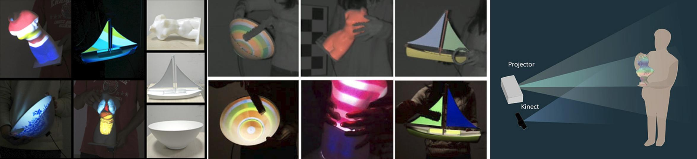

News
- Debuting my first original song “痛苦都来自幻想”.
- Digital Salon was presented at Siggraph Asia Real-Time Live 2024.
- I will serve in the Siggraph Asia 2024 Technical Papers Committee.
- I am co-organizing the CVPR 2024 workshop SyntaGen - Harnessing Generative Models for Synthetic Visual Datasets.
- The internship positions with me for 2024 have been filled. But I am always eager to connect with passionate individuals interested in future opportunities. Internship selections are typically made in late January and early February, but occasions may arise for mid-year openings. If you're interested in collaborating or exploring possibilities at any point in the future, I encourage you to email me directly. Your initiative and interest are highly valued, and I welcome your contact at any time.
- I presented Project Poseable at Adobe Max Sneaks 2023 . Watch the live demo.
- I served in the Siggraph 2023 Technical Papers Committee. I will chair the session "Motion Recipes and Simulation" on Monday, 7 August 10:45am - 12:15pm PDT.
Research
3D Learning
This part of work is about designing the general architecture and understanding the mechanism of deep learning for 3D data.
Publications:
DMesh++: An Efficient Differentiable Mesh for Complex Shapes
Sanghyun Son (Primary Intern), Matheus Gadelha, Yang Zhou, Matthew Fisher, Zexiang Xu, Yi-Ling Qiao, Ming C. Lin, Yi Zhou
2024 [paper] [project page]
DMesh: A Differentiable Representation for General Meshes
Sanghyun Son (Primary Intern), Matheus Gadelha, Yang Zhou, Zexiang Xu, Ming C. Lin, Yi Zhou
NeurIPS 2024 [paper] [project page] [code]
LRM-Zero: Training Large Reconstruction Models with Synthesized Data
Desai Xie, Sai Bi, Zhixin Shu, Kai Zhang, Zexiang Xu, Yi Zhou, Sören Pirk, Arie Kaufman, Xin Sun, Hao Tan
NeurIPS 2024 [paper] [project page] [code]
Carve3d: Improving Multi-view Reconstruction Consistency for Diffusion Models with RL Finetuning
Desai Xie, Jiahao Li, Hao Tan, Xin Sun, Zhixin Shu, Yi Zhou, Sai Bi, Sören Pirk, Arie E Kaufman
CVPR 2024 [paper] [project page] [code]
Fully Convolutional Mesh Autoencoder Using Efficient Spacially Varying Kernals
Yi Zhou, Chenglei Wu, Zimo Li, Chen Cao, Yuting Ye, Jason Saragih, Hao Li, Yaser Sheikh
Neurips 2020 [paper] [project page]
On The Continguity of Rotation Representations in Neural Networks
Yi Zhou*, Connelly Barnes*, Jingwan Lu, Jimei Yang, Hao Li
CVPR 2019 [paper] [project page]
3D Hair
This part of work is about hair modeling and simulation.
Publications:
Digital Salon: An AI and Physics-Driven Tool for 3D Hair Grooming and Simulation.
Chengan He (primary intern)*, Jorge Alejandro Amador Herrera (primary intern)*, Yi Zhou*, Zhixin Shu, Xin Sun, Yao Feng, Sören Pirk, Dominik L. Michels, Meng Zhang, Tuanfeng Y. Wang, Holly Rushmeier
Siggraph Asia Real-Time Live 2024 [project page] [RTL recording]
Augmented Mass-Spring model for Real-Time Dense Hair Simulation
Jorge Alejandro Amador Herrera (primary intern), Yi Zhou, Xin Sun, Zhixin Shu, Chengan He, Soren Pirk, Dominik L. Michels
2024 [project page] [arXiv]
Hair20K: A Large 3D Hairstyle Database.
Yi Zhou, Xin Sun, Chengan He
2024[project page]
Perm: A Parametric Representation for Multi-Style 3D Hair Modeling.
Chengan He (primary intern), Xin Sun, Zhixin Shu, Fujun Luan, Soren Pirk, Jorge Alejandro Amador Herrera, Dominik L. Michels, Tuanfeng Y. Wang, Meng Zhang, Holly Rushmeier and Yi Zhou
2024 ICLR (Spotlight) [arXiv] [project page] [code] [data]
HairNet: Single-View Hair Reconstruction Using Convolutional Neural Networks
Yi Zhou, Liwen Hu, Jun Xing, Weikai Chen, Han-Wei Kung, Xin Tong, Hao Li
ECCV 2018 [paper] [video] [dataset for 40 thousand 3D hair models]
Motion
This part of work is about generating vivid motion for 3D Avatars. Here we investigate in topics on motion prior, motion editing, long-term inbetweening, motion style editing, hand-object interaction, human-scene interaction and secondary motion simulation.
Publications:
Multi-Modal Hand-Object Interaction Generation.
Jinkun Cao (Primary Intern), Jingyuan Liu, Kris Kitani,Yi Zhou
2024 [paper]
GRIP: Generating Interaction Poses Conditioned on Object and Body Motion.
Omid Taheri (Primary Intern), Yi Zhou, Dimitrios Tzionas, Yang Zhou, Duygu Ceylan, Soren Pirk, Michael J. Black
3DV 2024 [paper] [project page]
Fast Complementary Dynamics via Skinning Eigenmodes.
Otman Benchekroun, Jiayi Eris Zhang, Siddhartha Chaudhuri, Eitan Grinspun1, Yi Zhou, Alec Jacobson
Siggraph 2023 [paper] [project page]

NeMF:Neural Motion Fields for Kinematic Animation.
Chengan He (Primary Intern), Jun Saito, James Zachary, Holly Rushmeier, Yi Zhou
Neurips 2022 (Spotlight Paper) [paper] [project page]
SAMP:Stochastic Scene-aware Motion Prediction
Mohamed Hassan, Duygu Ceylan, Ruben Villegas, Jun Saito, Jimei Yang, Yi Zhou and Michael J Black.
ICCV 2021 [paper]
[project page]
A Deep Emulator for Secondary Motion of 3D Characters
Mianlun Zheng (Primary Intern), Yi Zhou, Duygu Ceylan, Jernej Barbic
CVPR 2021 (Oral Presentation) [paper]
[project page][code]
Generative Tweening: Long-term Inbetweening of 3D Human Motions
Yi Zhou, Cynthia Lu, Connelly Barnes, Jimei Yang, Sitao Xiang, Hao Li
[paper]
[project page]
Human Capturing
This part of work is about inferring 3D human face, hair, garment and pose from images and videos. This work can enable the end applications on novel human synthesis, e.g., swapping the face between two videos.
Publications:

Realistic Dynamic Facial Textures from A Single Image Using GANs
Kyle Olszewski, Zimo Li, Chao Yang, Yi Zhou, Ronald Yu, Zeng Huang, Sitao Xiang, Shunsuke Saito, Pushmeet Kohli, Hao Li
ICCV 2017 [paper] [video] [additional materials]
Augmented Reality
Inspired by the hologram system in manga "Psycho Pass" I design the Pmomo (projection mapping on movable object) system to create the phantasm of real-world objects being covered with virtual exteriors. As supporting 6-DOF object motion, the system can keep tracking the object and projecting 3D texture on its surface in real-time. Meanwhile, occlusions are culled from projection as to improve the sense of realism. In the picture left, the models held in the user' hands were originally white but now rendered with vivid textures by projection.
For watching the demonstration videos: [preview] [surprise] [demo]
Publication:
PMOMO: PROJECTION MAPPING ON MOVABLE 3D OBJECT
Yi Zhou, Shuangjiu Xiao, Ning Tang, Zhiyong Wei, Xu Chen
CHI 2016 [paper]

Innovation Projects

Project Poseable
represents a breakthrough in AI-based image generation models, making it easy for the image generator to seamlessly interact with large 3D objects, including poses from photos of real people. The prototype is integrated with Project Poseable which can create a 3D rendering from text input, take depth and perspective into consideration, and re-align the object. While creating 3D scenes with traditional skeletal systems is technically complex and time-consuming, Project Poseable offers an effortless alternative that makes it possible for anyone to expand their creative horizons. Watch the live demo at Adobe Max Sneaks 2023.Get&Put
It is a cloud powered magic that enable users to grab pictures and music directly from the screen, carrying around the data and put them 'into' other smart devices. Through hand commands, the files are transferred from device-to-device without any extra equipment. For watching the videos: [fun] [child] [demo]Clio Super Painter
Clio is an android app that makes painting a new way of communication. It allows users to do synchronous painting and picture transmission on more than three Android devices via Wi-Fi and Bluetooth. To make it more fun, Clio also generates special effects when 'telepathy' happens between the users.
For downloading the apps and watching the videos:
[short] [fun]
AVAT: Automatic Visual Activity Test
AVAT is a medical application based on Kinect, and it can offer multiple self-catering vision test items, including: visual acuity test, chromatoptometry test and stereopsis vision test. It is very easy and convenient for hospital and home usage. Plus, AVAT can track the vision test results, helping the specialists to assess the change of visual condition, e.g. parents willing to monitor the vision acuity of their children. With the popularization of the AVAT system in medical institutions, schools and communities, it could solve the issue of the overloaded physical examinations in China.
Human Motion Recognition Based on Joint Motion Image
In the field of human motion recognition methods, the objective of this research is to transform motions into images and accurately recognize the motion images, under very small training sets.
Performance-based 3D Cartoon Facial Animation Control
I developed this software to create a windows application that can make the avatars follow the facial and body actions of the users in real time. In the left picture, I am controlling 'Sponge Bob' to perform funny actions of nodding and laughing. My method is building several key facial expression models, and morphing them into a new expression according to the facial coefficients tracked by Kinect.
Music
痛苦都来自幻想 written, arranged and performed by Julian Hou and Yi Zhou.
Cover song of 春よ、来い (Haru yo, koi) rearranged and performed by Julian Hou and Yi Zhou for celebrating the arrival of spring.
Il mio bel foco (B. Marcello) performed by Yi Zhou and Chenxi Liu.
"Concerto pour deux voix" rearranged and performed by Yi Zhou and Julian Hou.